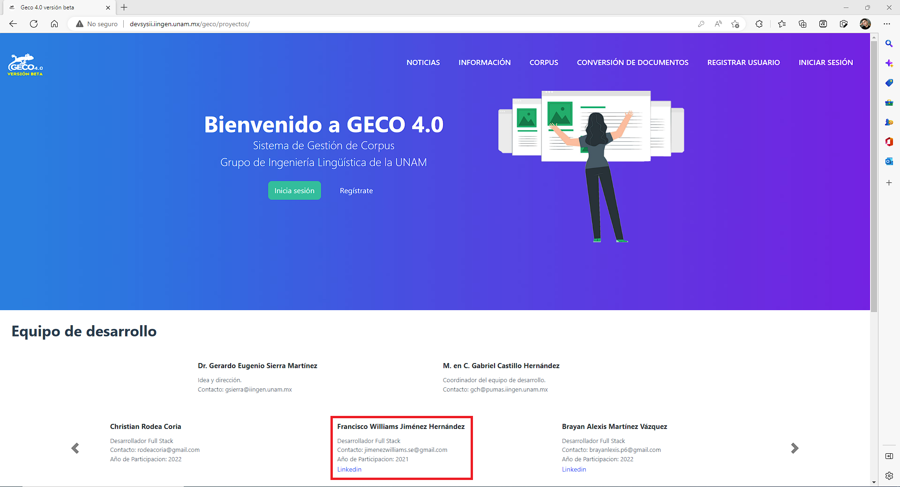

Internship project
Geco 4.0 is a corpus management system developed by the UNAM's Engineering Institute
I worked leading a team of university developers and developing two subsystems for Geco 4.0 using technologies, concepts and frameworks like Python/Django, Vanilla JavaScript, HTML5, CSS3 + Bootstrap, PostgreSQL, SCRUM framework, REST APIs and Ajax.
I also currently writing my thesis about this project.


A web application based on a reverse dictionary, allows users to describe a concept and get a list of words and phrases related to that description. User can also choose a language, English or Spanish.
A LastPass-like web application that allows users to login and logout, create, edit or delete objects (passwords, notes, addresses, payment cards and bank accounts) that are asociated to their account and generate secure passwords with a set of parameters given by them.
A Twitter-like social network website that allows users login and logout, make posts, like posts, edit posts, comment posts and follow other users.
A Gmail-like web application that allows users to login and logout, send emails to other users, receive emails from other users and archive that mails.
An eBay-like e-commerce auction site that allow users to post auction listings, place bids on listings, comment on those listings, and add listings to a “watchlist.”
A Wikipedia-like online encyclopedia that allows users to create articles.
A front-end for Google Search, Google Image Search, and Google Advanced Search that actually allows users to search on Google.